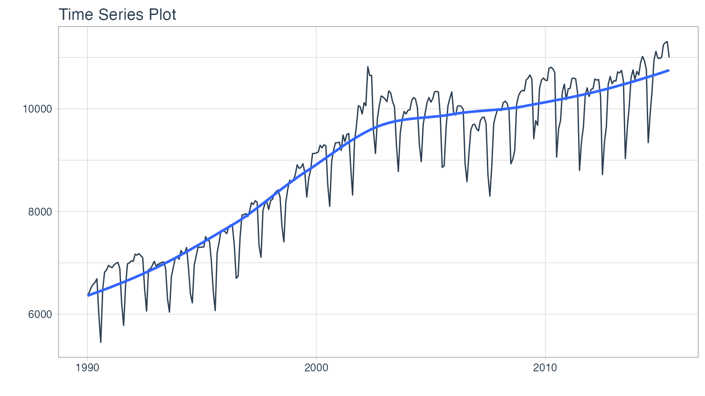
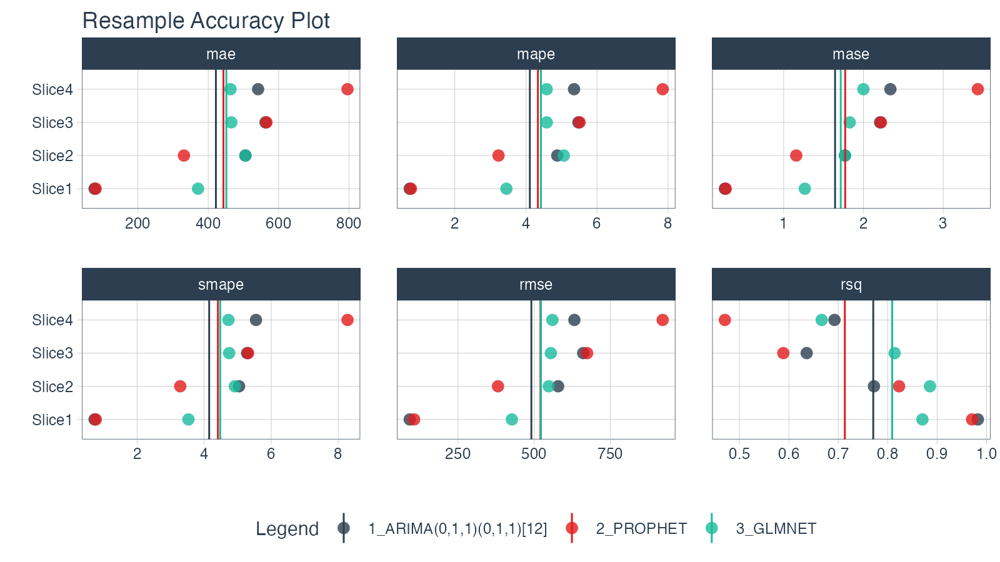

Modeltime Resample provide a convenient toolkit for efficiently evaluating multiple models across time, increasing our confidence in model selections.
modeltime_resample(), which automates the iterative model fitting and prediction procedure.plot_modeltime_resamples() provides a quick way to review model resample accuracy visually.modeltime_resample_accuracy() provides a flexible way for creating custom accuracy tables using customizable summary functions (e.g. mean, median, sd, min, max).Resampling gives us a way to compare multiple models across time.
In this tutorial, we’ll get you up to speed by evaluating multiple models using resampling of a single time series.
Load the following R packages.
library(tidymodels) library(modeltime) library(modeltime.resample) library(tidyverse) library(timetk)
We’ll work with the m750 data set.
m750 %>% plot_time_series(date, value, .interactive = FALSE)

We’ll use timetk::time_series_cv() to generate 4 time-series resamples.
"2 years"
"5 years"
"2 years
4
resamples_tscv <- time_series_cv( data = m750, assess = "2 years", initial = "5 years", skip = "2 years", slice_limit = 4 ) resamples_tscv
## # Time Series Cross Validation Plan
## # A tibble: 4 x 2
## splits id
## <list> <chr>
## 1 <split [60/24]> Slice1
## 2 <split [60/24]> Slice2
## 3 <split [60/24]> Slice3
## 4 <split [60/24]> Slice4Next, visualize the resample strategy to make sure we’re happy with our choices.
# Begin with a Cross Validation Strategy resamples_tscv %>% tk_time_series_cv_plan() %>% plot_time_series_cv_plan(date, value, .facet_ncol = 2, .interactive = FALSE)
Create models and add them to a Modeltime Table with Modeltime. I’ve already created 3 models (ARIMA, Prophet, and GLMNET) and saved the results as part of the modeltime package m750_models.
m750_models## # Modeltime Table
## # A tibble: 3 x 3
## .model_id .model .model_desc
## <int> <list> <chr>
## 1 1 <workflow> ARIMA(0,1,1)(0,1,1)[12]
## 2 2 <workflow> PROPHET
## 3 3 <workflow> GLMNETGenerate resample predictions using modeltime_fit_resamples():
m750_models (models) and m750_training_resamples
.resample_results contains the resample predictionsresamples_fitted <- m750_models %>% modeltime_fit_resamples( resamples = resamples_tscv, control = control_resamples(verbose = FALSE) ) resamples_fitted
## # Modeltime Table
## # A tibble: 3 x 4
## .model_id .model .model_desc .resample_results
## <int> <list> <chr> <list>
## 1 1 <workflow> ARIMA(0,1,1)(0,1,1)[12] <tibble [4 × 5]>
## 2 2 <workflow> PROPHET <tibble [4 × 5]>
## 3 3 <workflow> GLMNET <tibble [4 × 5]>Visualize the model resample accuracy using plot_modeltime_resamples(). Some observations:
resamples_fitted %>% plot_modeltime_resamples( .point_size = 3, .point_alpha = 0.8, .interactive = FALSE )

We can compare the overall modeling approaches by evaluating the results with modeltime_resample_accuracy(). The default is to report the average summary_fns = mean, but this can be changed to any summary function or a list containing multiple summary functions (e.g. summary_fns = list(mean = mean, sd = sd)). From the table below, ARIMA has a 6% lower RMSE, indicating it’s the best choice for consistent performance on this dataset.
resamples_fitted %>% modeltime_resample_accuracy(summary_fns = mean) %>% table_modeltime_accuracy(.interactive = FALSE)
| Accuracy Table | |||||||||
|---|---|---|---|---|---|---|---|---|---|
| .model_id | .model_desc | .type | n | mae | mape | mase | smape | rmse | rsq |
| 1 | ARIMA(0,1,1)(0,1,1)[12] | Resamples | 4 | 421.78 | 4.11 | 1.64 | 4.15 | 490.88 | 0.77 |
| 2 | PROPHET | Resamples | 4 | 443.09 | 4.34 | 1.77 | 4.41 | 520.80 | 0.71 |
| 3 | GLMNET | Resamples | 4 | 451.48 | 4.42 | 1.71 | 4.48 | 522.40 | 0.81 |
Resampling gives us a way to compare multiple models across time. In this example, we can see that the ARIMA model performs better than the Prophet and GLMNET models with a lower RMSE. This won’t always be the case (every time series is different).
This is a quick overview of Getting Started with Modeltime Resample. To learn how to tune, ensemble, and work with multiple groups of Time Series, take my High-Performance Time Series Course.